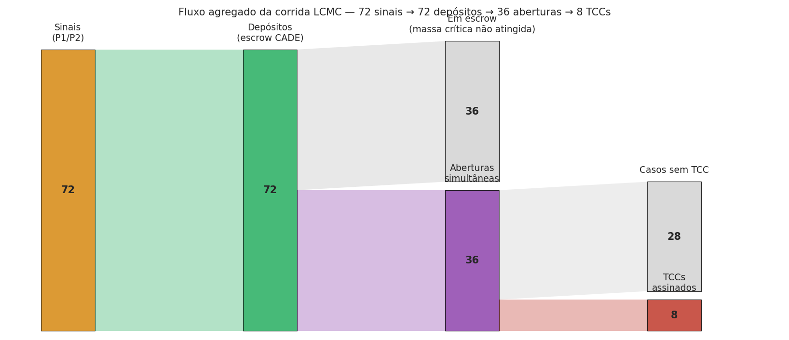
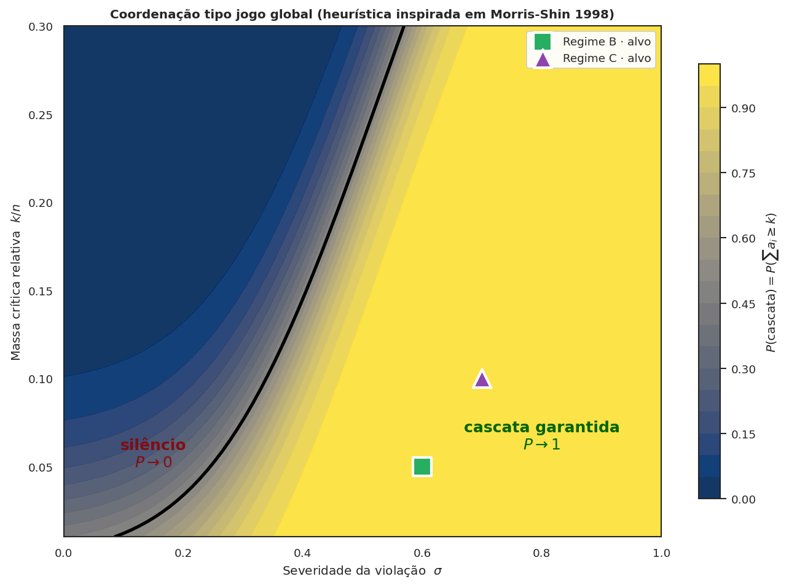
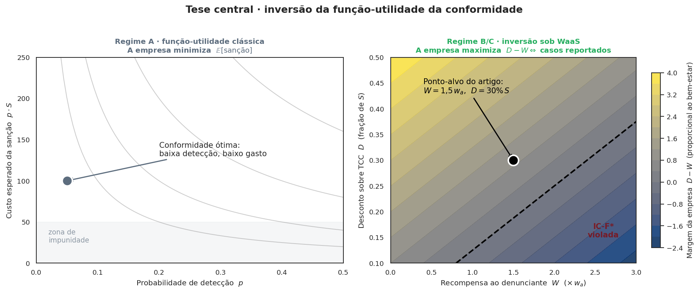
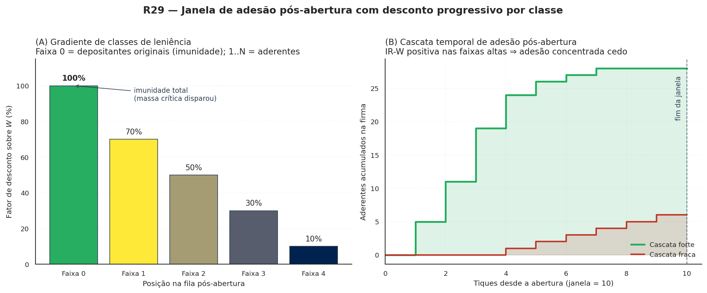

O mecanismo, em três camadas¶
Descrição do mecanismo da LCMC organizada do canal de recepção qualificada para o problema de coordenação que ele resolve, e por último para os instrumentos opcionais de internalização — o instrumento monetário Whistleblower-as-a-Service entre eles.
Esta página é organizada de fora para dentro: do mecanismo de recepção qualificada (canal de depósito condicional) para o problema de coordenação que ele resolve, e por fim para os instrumentos incrementais que aumentam adesão sem serem essenciais. A ordem importa: parte da literatura interna do projeto leu, em versões anteriores, o WaaS como sinônimo da LCMC. Não é. O Ato 1 separou os dois conceitos; aqui formalizamos a distinção e detalhamos cada uma das cinco camadas.
Camada 1 · Canal
O canal de depósito condicional¶
A Leniência Condicionada à Massa Crítica (LCMC) é um information escrow operado pelo CADE:
🔑 Princípio LCMC — canal de depósito condicional. O CADE recebe denúncias com cláusula de abertura condicional. O trabalhador deposita sua denúncia (texto livre + prova específica) com a condição: "esta denúncia só é instaurada se houver ≥
q_min · n_traboutros depósitos compatíveis do mesmo setor/firma dentro deΔttiques". Enquanto o gatilho não é atingido, a denúncia fica em escrow: a firma não é notificada, a denúncia não vira processo, a identidade do trabalhador não é revelada. Quando o gatilho é atingido, todas as denúncias se abrem simultaneamente — e ninguém foi o primeiro isoladamente.
O mecanismo resolve diretamente o problema clássico de Olson (1965): sub-iniciação ("ninguém quer ser o primeiro") é eliminada por construção. A denúncia individual nunca fica exposta sozinha — ou se acopla a outras e se abre coletivamente, ou permanece em escrow indefinidamente. Sem instrumento monetário, sem ressarcimento controverso, sem categoria dogmática nova: apenas procedimento administrativo de recepção qualificada, ancorado em Art. 4º II/III da Lei 12.529/2011 c/c Lei 9.784/99.
Três paralelos para situar a ideia¶
Quem nunca leu Ayres-Unkovic (formalizadores da ideia em Yale Law School) encontra três paralelos no cotidiano que descrevem a mesma estrutura:
- Kickstarter. No Kickstarter, o cartão de crédito do apoiador só é cobrado se o projeto atingir a meta de apoiadores; senão, ninguém paga e o projeto não começa. É o desenho all-or-nothing: ou todos cooperam e o projeto sai, ou ninguém é exposto financeiramente. A LCMC aplica o mesmo desenho à denúncia: a denúncia individual só "cobra" — vira processo — se outras forem depositadas; senão, nada acontece e ninguém aparece.
- Callisto (callisto.org). Plataforma americana, em operação desde 2015, onde estudantes universitárias registram denúncias de assédio. O nome de uma vítima só é revelado se outra vítima identificar o mesmo agressor — coincidência libera; isolamento mantém anonimato. É a prova prática de que o desenho funciona em produção, não só em paper.
- Caixa-cofre operada por terceiro confiável. Imagine envelopes com denúncias entregues a uma caixa-cofre operada por uma instituição neutra — no nosso caso, o CADE. Cada envelope vem com a instrução: "abra esta caixa apenas quando houver ao menos N envelopes parecidos contra a mesma empresa". A caixa pode esperar meses. Quando atinge N, todos os envelopes se abrem juntos. Ninguém foi o primeiro a se expor.
O nome acadêmico desse desenho é information escrow — depósito de informação sob condição de abertura pré-acordada, com terceiro confiável como custodiante. A formalização contemporânea está em Ayres & Unkovic (2012), Information Escrows, Michigan Law Review vol. 111 p. 145; a aplicação ao antitruste brasileiro com o CADE como custodiante é a contribuição deste projeto.
Em código, o canal é implementado em duas camadas. R20 (modo_corrida) registra firmas que atingiram massa crítica agregada — sem rastrear identidade individual do depositante. R27 (usar_escrow_explicito) carrega o escrow individual no AutoridadeAgent: cada sinal vira um depósito identificado, e a abertura simultânea colapsa N depósitos em um caso processual único. O parâmetro janela_escrow_tiques é o "Δt" da definição LCMC — quantos tiques um depósito permanece no escrow antes de expirar (default 0 = escrow eterno, leitura Callisto).
# src/waas_antitrust/agents.py — AutoridadeAgent (R27)
class AutoridadeAgent(Agent):
# ... self.escrow_denuncias: dict[int, list[dict]] = {}
def depositar_condicional(self, id_empresa, id_trabalhador,
qualidade_prova, tique) -> None:
"""Trabalhador deposita denúncia condicional no escrow do CADE."""
def expirar_depositos_condicionais(self, tique_atual, janela) -> int:
"""Remove depósitos com idade >= janela. janela <= 0 é no-op."""
def abrir_escrow_se_massa_critica(self, id_empresa, q_min,
n_trabalhadores_firma) -> bool:
"""Abertura simultânea quando massa crítica é atingida."""
O WaaSModel.step() ativa o caminho v3 via flag opt-in:
# src/waas_antitrust/model.py — fase P2.5b (R27)
if self.usar_escrow_explicito:
self.autoridade.expirar_depositos_condicionais(
tique_atual=self.tique, janela=self.janela_escrow_tiques
)
for fid in self.trabalhadores_por_empresa:
empresa = self.empresas[fid]
self.autoridade.abrir_escrow_se_massa_critica(
id_empresa=fid,
q_min=self.q_min_cooperacao_interna,
n_trabalhadores_firma=empresa.n_trabalhadores,
)
As funções de canal são puras na lógica e idempotentes por tique. Nada de pagamento entra na conta — o canal opera independentemente de qualquer instrumento monetário. O cenário canônico apenas_canal_sem_instrumento testa exatamente essa propriedade: W_mult=0, D_disc=0, usar_escrow_explicito=True, Regime B.

cenario_corrida_leniencia com usar_escrow_explicito=True (10 firmas × 120 trabalhadores × 15 ciclos, seed=2026). 72 sinais viraram 36 depósitos condicionais; 7 firmas atingiram massa crítica intra-firma; 36 depósitos se abriram simultaneamente em casos qualificados; 8 firmas optaram pelo TCC com ressarcimento WaaS. A figura é evidência da Proposição 4 (R20) por construção do canal.
Camada 2 · Coordenação
A coordenação que o canal resolve¶
O canal não cria cooperação onde não havia; resolve o jogo de coordenação que torna a cooperação racionalmente difícil. Olson (1965, Logic of Collective Action) mostrou que mesmo em grupos pequenos onde todos sairiam melhor cooperando, cada agente individual prefere esperar: ninguém quer ser o primeiro a arcar com o risco. Granovetter (1978) generalizou via limiares heterogêneos; Centola-Macy (2007) mostraram que contágio complexo exige reforço local.
O escrow muda a estrutura informacional do jogo. Sob canal de depósito condicional:
- O trabalhador não escolhe entre "denunciar isolado" e "calar". Escolhe entre "depositar (com risco zero enquanto não houver coorrespondência)" e "calar".
- Como o depósito não expõe nada enquanto o gatilho não é atingido, o custo individual cai a praticamente zero (custo de redigir + depositar).
- Quando há coorrespondência, todos abrem simultaneamente — a coordenação foi resolvida por agregação institucional, não por confiança horizontal informal.
Esta diferença é radical em relação à formulação anterior do projeto, que dependia de capital social organizacional (Coleman 1990) sendo internalizado pelo regulador. Sob o canal correto, o regulador não precisa que o capital social pré-exista: a coordenação acontece via depósito paralelo no canal, sem necessidade de comunicação horizontal entre os depositantes.
R26 (erosão endógena Coleman) segue válido apenas como sub-caso — se o CADE publica taxas agregadas de depósito no canal, pode haver leak parcial que afeta a comunicação informal subsequente. Mas o caso geral é independente desse risco.

A peça empírica: gradiente Saito (2021)¶
Quando há recompensa (instrumento monetário ativo, incremental ao canal), a LCMC distribui o atenuante por posição na fila usando o gradiente empírico Saito, extraído de 349 TCCs CADE 2012-2019:
| Posição na fila inter-firma | Desconto \(D_{\text{Saito}}\) |
|---|---|
| 1ª | 43,43% |
| 2ª | 34,51% |
| 3ª | 20,22% |
| 4ª | 17,99% |
| 5ª | 16,77% |
| ≥ 9ª | 15,00% (piso Tribunal) |
O mesmo gradiente, normalizado por \(D_{\text{Saito}}(1) = 43{,}43\%\), calibra a fila intra-firma sob modo_corrida=True — quem coopera em posição 1 dentro da firma recebe 100% da recompensa; em posição 2, 79,5%; em posição 3, 46,6%. A escolha não é arbitrária: o mesmo dado empírico do CADE calibra duas escalas.
Camada 3 · Incrementos
Os cinco instrumentos incrementais¶
A LCMC funciona sem nenhum dos instrumentos abaixo — o canal sozinho resolve a coordenação. Os instrumentos aumentam a probabilidade de adesão ao canal, oferecendo benefício ao depositante. Cada um tem reserva constitucional distinta e pode ser adotado isoladamente ou em combinação.
Sob a LCMC, o substrato cooperativo é o que importa. Mas a cooperação custa caro para cada trabalhador individualmente — risco de represália, custo legal, desvio da carreira. Cinco instrumentos podem compensar esse custo (cada um com reserva constitucional diferente):
| Instrumento | Direção do pagamento | Reserva constitucional · regime |
|---|---|---|
| 💰 WaaS — recompensa via TCC | Firma → trabalhador; pagamento entra como atenuante. Aplicação direta da IC-F* (Camada 3) | Art. 22 I; regime B ou C |
| 🚪 Hirschman — vesting acelerado | Firma → trabalhador via equity; cláusula contratual padrão; ameaça crível de êxodo coletivo dissuade em P0 e amplia IC-F* em P3 | Art. 22 I; regime Cₜ |
| 🧾 Crédito tributário | Estado → trabalhador via renúncia fiscal; análogo limitado ao IRS Whistleblower (26 U.S.C. §7623) | LC + LRF; regime Cᵩ (R22 stub) |
| ⚖️ Leniência criminal individual | Estado → trabalhador via imunidade penal; não-persecução do partícipe cooperador | Art. 5º XXXIX penal estrita; regime Cₚ (R23 stub) |
| 🤝 Nenhum pagamento — só reconhecimento | LCMC pura. Substrato cooperativo internalizado por dever de ofício (boa fé Lei 9.784/99) sem instrumento monetário | Cenários canônicos: apenas_massa_critica_observavel (sinal sem canal, Regime A) e apenas_canal_sem_instrumento (canal explícito CADE sem pagamento, Regime B + usar_escrow_explicito=True) |
O catálogo declarativo das 5 entradas — o canal base (sem pagamento) + os 4 instrumentos monetários — está em src/waas_antitrust/instrumentos.py:
from waas_antitrust.instrumentos import INSTRUMENTOS, instrumentos_por_regime
# Quais entradas cabem em cada regime?
for nome in ("A", "B", "C", "Cᵩ", "Cₚ"):
disponiveis = instrumentos_por_regime(nome)
print(f" Regime {nome:3s}: {[i.nome for i in disponiveis]}")
# A : []
# B : ['canal_deposito_condicional', 'recompensa_tcc_waas']
# C : ['canal_deposito_condicional', 'recompensa_tcc_waas',
# 'vesting_acelerado_hirschman']
# Cᵩ: + 'credito_tributario_denunciante'
# Cₚ: + 'leniencia_criminal_individual'
Camada 4 · Aritmética
A IC-F* sob instrumento WaaS¶
Quando esta camada se aplica. A próxima seção é específica do instrumento WaaS — o único que envolve a firma pagando o trabalhador diretamente, depois que o canal abriu e o procedimento foi instaurado. Para os outros instrumentos, a aritmética é diferente (Hirschman tem
custo_exodo_esperadoem vez deW, por exemplo). Para a configuração "canal sem instrumento", esta camada não se aplica.
A pergunta natural, e a primeira que aparece quando alguém ouve o WaaS pela primeira vez, é uma versão mais educada de "você é ingênuo?":
Basta a empresa se recusar a pagar os denunciantes e ainda assim pegar o desconto para tudo ruir, não?
A resposta está nas três subseções que seguem: 4.1 a escolha em prosa; 4.2 a fórmula da IC-F*; 4.3 um exemplo numérico em R$ 1 bi de receita. Com três pontos (sub-§ 4.4-4.6) onde o argumento pode quebrar.
4.1 A escolha da firma, em uma frase¶
A firma já foi denunciada — o gatilho de massa crítica disparou, o caso vai ao CADE. A partir daí, ela escolhe entre três caminhos. Em todos eles, paga alguma coisa; a diferença é a soma.
- Assinar um TCC com ressarcimento WaaS — paga a recompensa \(W\) aos denunciantes e ganha o desconto cheio \(D_{\text{total}}\) no acordo.
- Assinar um TCC clássico — não paga \(W\), mas obtém apenas o desconto comum \(D_{\text{base}}\) que o Art. 85 da Lei 12.529/2011 já oferece em qualquer TCC.
- Não assinar nada — enfrenta a sanção cheia \(S\), com a probabilidade de condenação que a investigação produz.
A diferença entre os dois primeiros — entre o TCC-WaaS e o TCC clássico — é a peça que sustenta o argumento. Não é o desconto total \(D_{\text{total}}\) que move a firma a pagar a recompensa; é o incremento que o canal WaaS oferece sobre o que a firma teria de qualquer jeito.
A firma paga os denunciantes não porque ganha um desconto. Paga porque ganha um desconto maior do que conseguiria sem isso — e maior o suficiente para cobrir a recompensa, com folga.
4.2 A IC-F*, em prosa antes da fórmula¶
A condição que define quando a firma escolhe pagar tem nome em economia institucional: incentive compatibility da firma — escrita aqui como IC-F*. Em prosa direta:
A firma paga a recompensa \(W\) se, e somente se, o incremento de desconto que o canal WaaS oferece for maior que a recompensa.
Em fórmula, com \(S\) sendo a sanção esperada e \(D_{\text{base}}\) o desconto que o TCC clássico já garante:
A versão simplificada \(W < D_{\text{total}}\) — usada nos artigos teóricos de leniência clássica — só funciona se assumirmos \(D_{\text{base}} = 0\). Quando o TCC clássico já dá desconto, ignorar isso é overclaim. O modelo computacional incorpora a forma correta (parâmetro D_disc_base_tcc em WaaSParametros).
A IC-F* no código¶
A função que decide se a firma paga está em model.py (Phase P3). Em pseudocódigo (omitindo a camada Hirschman e a corrida LCMC):
# src/waas_antitrust/model.py — fase P3, decisão da firma sob instrumento WaaS
S = sancao_esperada(empresa) # sanção cheia (R$)
D_total = self.params.D_disc * S # desconto TCC-WaaS
D_base = self.params.D_disc_base_tcc * S # desconto TCC clássico (Art. 85)
D_extra = max(0.0, D_total - D_base) # incremento que o WaaS oferece
W_total = sum(self._W_esperado(t.w_a) for t in disparados) # recompensa total
# IC-F* simplificada (default; modo histórico):
empresa.pagou_denunciantes = D_extra > W_total
# IC-F* ampliada por Hirschman (R07):
custo_exodo = hirschman.custo_exodo_esperado(...)
empresa.pagou_denunciantes = (D_extra + custo_exodo) > W_total
Sob modo_corrida=True (LCMC + WaaS), a fórmula muda — \(D_{\text{total}}\) deixa de ser constante e passa a depender da posição da firma na fila inter-firma:
# src/waas_antitrust/model.py — fase P3 sob modo_corrida
from waas_antitrust.corrida import decaimento_D, decaimento_W
pos_firma = empresa.posicao_fila_leniencia
d_frac = decaimento_D(pos_firma, perfil="saito") # 1ª=0,4343; 2ª=0,3451; ...
D_total = d_frac * S
W_total = sum(decaimento_W(t.posicao_corrida_interna, W_base, "saito")
for t in disparados)
A diferença entre o caminho histórico e o caminho LCMC fica explícita: no histórico, todo trabalhador recebe W_base; sob LCMC, a recompensa decai com a posição na fila intra-firma, e o desconto da firma decai com a posição inter-firma. Duas filas, um gradiente empírico.
4.3 Uma firma, R$ 1 bilhão de receita, 30 minutos com a calculadora¶
Aritmética é o tipo de coisa que parece dura até virar familiar. Aqui está com nomes em reais.
Imagine uma firma com receita afetada \(R = \text{R\$}\,1\) bilhão e severidade da conduta \(\sigma = 0{,}5\) (no meio da escala). O CADE pratica multas-base na faixa de 0,1% a 20% da receita; usamos 5% como referência conservadora, e escalamos por \((1+\sigma)\):
O desconto total a que ela teria direito num TCC com ressarcimento WaaS é, digamos, 30% — alinhado com o que o Art. 12 permite combinando com o Art. 85:
O desconto que ela teria mesmo sem WaaS, só com o TCC clássico, é o que precisamos calibrar contra os dados de Saito (2021). Para este exemplo, usamos uma estimativa intermediária — 10%:
R$ 15 milhões O incremento \(D_{\text{extra}}\) — exatamente quanto a firma ganha a mais ao escolher o caminho WaaS em vez do TCC clássico. É contra este número, não contra os R$ 22,5 milhões totais, que a recompensa total \(W\) tem de ser menor para a firma pagar.
Agora o outro lado. Suponha que 10 denunciantes internos atingiram a massa crítica. Cada um receberia uma recompensa de 1,5 salários anuais — calibrada para satisfazer a participação do trabalhador (IR-W), inclusive cobrindo o custo legal individual. Com \(w_a = \text{R\$}\,180\,000\) e \(W_{\text{indiv}} = 1{,}5 \cdot w_a\):
A IC-F* fica satisfeita com folga ampla:
R$ 12,3 milhões A margem que sobra na conta da firma quando ela escolhe o caminho WaaS. É o preço que o mecanismo extrai do bolso da empresa investigada e devolve ao bolso dos trabalhadores que falaram — uma transferência privada com efeito de prevenção pública.
Tudo isso depende, evidentemente, de quanto \(D_{\text{base}}\) realmente é na prática do CADE. Quando esse número aproxima-se de \(D_{\text{total}}\), a margem encolhe. Quando ultrapassa, o mecanismo deixa de funcionar — e este é o primeiro dos três vetores que cobrimos a seguir.

4.4 Os três vetores de quebra — onde o argumento pode mesmo ruir¶
Vetor A: e se o TCC clássico já der desconto suficiente?¶
Este é o cético que diz "basta a empresa não pagar e pegar o desconto". A versão tecnicamente correta da crítica é: se \(D_{\text{base}}\) já cobre uma fração significativa de \(D_{\text{total}}\), a margem \(D_{\text{extra}}\) encolhe e a IC-F* deixa de motivar o pagamento.
O desenho jurídico se sustenta porque o Art. 12 da Res. 21/2018 é explícito ao tratar o ressarcimento das vítimas como acréscimo ao desconto genérico. A magnitude desse acréscimo é discricionária — depende da prática do CADE em cada caso. A calibração empírica desse parâmetro é precisamente o que falta em R03 (calibração formal contra Saito 2021).
O modelo torna isto explícito: o parâmetro D_disc_base_tcc em WaaSParametros permite simular qualquer valor de \(D_{\text{base}}\), inclusive o pior caso em que \(D_{\text{base}} = D_{\text{total}}\). Quando isso acontece, \(D_{\text{extra}} = 0\), ninguém paga a recompensa, e o contador n_firmas_optaram_tcc_classico registra a quebra. Testes em tests/test_vetores_quebra.py cobrem o caso direcionalmente.
Vetor B: e se o Judiciário anular o TCC?¶
A re-caracterização da recompensa como "ressarcimento das vítimas" é uma construção jurídico-finalística. O Judiciário pode rejeitá-la — e a recusa pode vir anos depois do TCC ter sido assinado, anulando-o retroativamente. Quando isso acontece, a empresa perde o desconto e a multa cheia retorna como crédito ao erário.
Este é precisamente o falsificador F6 declarado no desenho. A defesa institucional contra ele é dupla. Em primeiro lugar, o Regime C — extensão da Lei 13.608/2018 via Congresso — elimina a controvérsia legal, custando voto político. Em segundo, mesmo em Regime B, o risco de anulação é uma propriedade do desenho que precisa ser dimensionada, não escondida.
O modelo torna esse risco calibrável via p_anulacao_tcc. Em P4, todo TCC assinado é sorteado contra essa probabilidade; quando anulado, o contador n_tcc_anulados registra, a multa cheia volta ao erário, e o sistema perde a coordenação que o mecanismo construía. Em testes, \(p_{\text{anulação}}\) alta faz o Regime B convergir para o Regime A — um falsificador quantitativo, não verbal.
Vetor C: e os advogados dos denunciantes?¶
Esta é uma crítica que custumeiramente passa em branco e merece resposta direta. Sim, o denunciante terá custos legais: advogado para reivindicar a recompensa, defesa em eventual ação trabalhista por represália, e — em hipótese pior — defesa criminal se for caracterizado como partícipe da conduta (a colisão dura com o Art. 86 da Lei 12.529/2011, território de leniência clássica).
Três cenários institucionais são possíveis, e implicam calibrações diferentes:
- O denunciante paga. Eleva o piso da IR-W — a recompensa precisa ser maior para compensar. Estimativas conservadoras no Brasil colocariam o custo legal entre 10% e 50% de um salário anual.
- A empresa cobre via TCC. Análogo ao programa Dodd-Frank §922 da SEC americana, em que o pagamento bruto pode incluir margem para honorários do advogado do denunciante. Requer cláusula explícita na proposta de TCC e aprovação do CADE.
- O Estado financia via fundo. Análogo ao IRS Whistleblower Office. Exige lei (Regime C) e dotação orçamentária — politicamente custoso, mas estruturalmente robusto.
O modelo torna isto calibrável via custo_legal_uw (em unidades de \(w_a\)). O parâmetro entra na IR-W do arquétipo "racional" — quando o custo legal é alto, a recompensa \(W\) precisa subir para o trabalhador racional ainda denunciar.
O break-even ético coletivo (R16)¶
Até aqui o argumento foi inteiramente financeiro — IC-F* da firma, IR-W do trabalhador, contas em reais. Mas há uma intuição forte que a versão puramente racional não captura: a partir de uma certa massa crítica, algo muda na lógica individual. O trabalhador que vê dez colegas falando não decide pelo mesmo cálculo de quem está sozinho.
O modelo agora incorpora isso explicitamente, baseado em Torsell (2026,
Theory and Decision) e na teoria de inequity aversion de Fehr &
Schmidt (1999). Um quinto arquétipo — "fairminded" — entra ao lado dos
quatro de Hokamp-Pickhardt (ético, imitativo, racional, aleatório). O FM
agente computa o payoff racional clássico e adiciona um prêmio ético
proporcional à fração de pares já sinalizando:
onde \(\phi_{\text{vizinhos}}\) é a fração de vizinhos da rede intra-firma
que sinalizaram no tique anterior, e \(\alpha\) é o peso da inequity
aversion (parâmetro peso_inequity_aversion).
A consequência emergente é o break-even ético: enquanto \(\phi\) é baixa, FM se comporta como racional puro; quando \(\phi\) ultrapassa um limiar tácito, o prêmio ético inverte o sinal da decisão — calar passa a ser desigualdade moral mais custosa do que falar. Não é hardcoded; é propriedade emergente do mesmo agente Fehr-Schmidt que a literatura usa em jogos de barganha.
O resultado central de Torsell (2026) — que FM proliferaria em populações HE+FM sob qualquer dinâmica payoff-monotone, com aprendizado intra-geracional via fictitious play — sugere que o canal ético não é uma curiosidade marginal; pode ser a peça dominante quando a massa crítica se forma. Modelar isto endogenamente é o trabalho de R16, e o catálogo de cenários normativos (R17) já oferece presets que ativam o canal.
Camada 5 · Cascata
Janela de adesão pós-abertura com desconto progressivo (R29)¶
A LCMC clássica resolve o problema de quem dá o primeiro passo: ninguém é o primeiro, porque o canal espera todos. Mas quando a massa crítica é atingida e o bloco se abre, sobra ainda uma decisão aberta para o resto dos trabalhadores da firma: o que fazer com quem viu a conduta mas não depositou a tempo? A regra R29 oferece a esses retardatários uma janela de dez tiques para aderir à classe dos lenientes com desconto decrescente por ordem de chegada — uma versão pós-coordenação da fila clássica do Art. 86 da Lei nº 12.529/2011.
A lógica é direta. No instante da abertura, os depositantes originais — aqueles que dispararam a massa crítica — ficam na faixa 0: imunidade total. Pelos próximos janela_adesao_pos_abertura tiques (default 10), trabalhadores da mesma firma que ainda não cooperaram podem aderir: o primeiro entra na faixa 1, o segundo na faixa 2, e assim por diante. Cada faixa tem um fator de desconto sobre a recompensa W, descrito pela tupla descontos_faixas_adesao (default (1.0, 0.7, 0.5, 0.3, 0.1)). Quem aderiu na posição 0 (junto com os originais) recebe 100% de W; quem aderiu em quinta posição em diante recebe 10% — o piso. Quem não aderiu até o fim da janela permanece no escrow comum e está sujeito à expiração R27-ii.

Em prosa: a R29 transforma a abertura do bloco em evento Schelling reverso. No instante zero, a firma já sabe que vai ser notificada — não há mais dúvida sobre o gatilho. Mas para cada trabalhador que tinha hesitado, agora há uma escolha clara: aderir já (e levar desconto alto) ou esperar (e ver o desconto cair tique a tique). É o mesmo dispositivo da fila clássica de leniência operado dentro da firma já aberta, sem precisar de outro cartel para servir de gatilho.
O efeito jogo-teórico é dois: (i) a janela aumenta a captação de prova — mais trabalhadores cooperam, qualidade média da prova sobe; (ii) cria pressão antecipatória sobre quem está pensando em depositar para o canal em primeiro lugar. Mesmo quem prefere "esperar para ver" tem incentivo para depositar antes da abertura, porque saber-se na faixa 0 vale mais do que apostar em entrar na faixa 1 depois.
Em código, a regra é uma fase nova P2.5c entre a abertura do escrow e a decisão da firma (P3). Sob janela_adesao_pos_abertura = 0 (default), a fase é no-op e o modelo se comporta exatamente como antes — compat estrita.
# src/waas_antitrust/model.py — fase P2.5c
if self.usar_escrow_explicito and self.janela_adesao_pos_abertura > 0:
self.autoridade.processar_adesao_pos_abertura(
tique_atual=self.tique,
janela=self.janela_adesao_pos_abertura,
descontos=self.descontos_faixas_adesao,
trabalhadores_por_empresa=self.trabalhadores_por_empresa,
W_max=self._W_esperado(1.0),
custo_represalia=self.r_represalia,
)
A decisão individual de aderir é a IR-W projetada para a faixa: o trabalhador entra se fator_desconto[k] × W_max > custo_represalia × w_a. Como o fator decai, há uma posição \(k^*\) a partir da qual ninguém adere mais — corte endógeno do que originalmente seria uma cauda infinita. Os reporters n_aderentes_pos_abertura_acum e n_blocos_em_janela_adesao_acum ficam expostos no DataFrame resultado, como qualquer outro estado do modelo. O cenário canônico cascata_adesao_progressiva ativa a regra com a parametrização default; o caderno Brincar in-browser tem o slider "Janela de adesão R29" para ajustar o \(\Delta t\) ao vivo.
A corrida que faltava (R20)¶
A leniência clássica funciona porque cria uma corrida temporal entre cúmplices: quem entrega primeiro escapa da multa, e cada conspirador, sabendo disso, antecipa-se ao outro. O WaaS na sua forma original não tinha esta corrida: o gatilho de massa crítica era binário (k denunciantes ⇒ a firma é notificada), o desconto da firma era constante na IC-F*, a recompensa do trabalhador era constante na IR-W. A delação era um ato, não uma corrida.
Sob o moat dos mercados digitais, a corrida clássica entre firmas não tem onde acontecer — a conduta é unilateral, sem cúmplice externo. A única corrida possível é intra-firma: entre os funcionários que viram a conduta. A LCMC institucionaliza isso e acopla a uma segunda corrida — inter-firma — calibrando ambas pelo mesmo gradiente Saito.
Corrida intra-firma (entre trabalhadores)¶
Dentro de cada firma, cada cooperador entra em uma FilaInternaCooperacao na ordem em que sinaliza. A recompensa decai com a posição \(k\):
Numericamente:
| Posição \(k\) | \(D_\text{Saito}(k)\) | \(f_W(k)\) |
|---|---|---|
| 1ª | 43,43% | 1,000 |
| 2ª | 34,51% | 0,795 |
| 3ª | 20,22% | 0,466 |
| 4ª | 17,99% | 0,414 |
| ≥ 9ª | 15,00% (piso Tribunal/CADE) | 0,345 |
A consequência: o trabalhador racional que espera ver vários colegas falarem antes de falar recebe fração pequena da recompensa. Quem fala primeiro recebe o cheque cheio. A IR-W deixa de ser um limiar absoluto e vira um jogo de ordem — exatamente o que torna a corrida estável em leniência clássica, transposto para o microcosmo intra-firma.
Corrida inter-firma (entre firmas)¶
A primeira firma a satisfazer o gatilho de massa crítica interna (\(n_\text{cooperadores} \ge q_\text{min} \cdot n_\text{trabalhadores}\), com \(q_\text{min}\) default \(= 10\%\), calibrável por conduta via N_ATORES_PRIMARIOS_NECESSARIOS) entra na FilaLeniencia global em posição 1. A segunda em posição 2. E assim por diante.
A IC-F* deixa de comparar \(W\) contra \(D_\text{extra}\) constante e passa a comparar contra:
Para a 1ª firma, \(D_\text{total}(1) \approx 43\% \cdot S\) — IC-F* generosa, satisfeita com folga ampla. Para a 4ª, \(D_\text{total}(4) \approx 18\% \cdot S\) — a margem encolhe. Para a ≥ 9ª (ou nenhuma cooperação interna), cai ao piso de 15% e a margem pode inverter.
Consequência teórica: Proposição 1 ganha número de firmas¶
A Proposição 1 original ("existem parâmetros em que IC-F* é satisfeita") se transforma:
Prop. 1 (LCMC). Sob os parâmetros do ponto-alvo, existe número finito \(n^\star\) de firmas que satisfazem a IC-F* na fila inter-firma. Firmas que chegam em posição \(> n^\star\) não cobrem \(W\) com \(D_\text{total}(\text{pos})\).
Esta versão é mais forte: não diz só que "existe equilíbrio cooperativo", diz quantas firmas correm. A corrida ganha precisão.
Dois canais de feedback acoplam as corridas¶
A acoplagem entre corrida intra-firma e inter-firma se dá por dois canais:
p_percglobal — quando uma firma atinge massa crítica e é notificada, a percepção de detecção em todas as outras firmas sobe (canal Schelling, choquecaso_paradigmaticoendogenizado). A trabalhadora em outra firma recalcula sua expectativa de posição final.Wesperado individual — trabalhadores observando a corrida em curso (phi_vizinhosestendido para vizinhos inter-firma) ajustam expectativa de posição final na fila. Quem chega tarde sabe que recebe menos.
A janela temporal janela_temporal_tiques (default 4) limita quanto tempo a firma tem para fechar o gatilho. Se nenhuma firma atinge \(q_\text{min}\) na janela, todas perdem o benefício LCMC e recaem em TCC clássico — o Vetor D (corrida vazia) documentado em tests/test_vetores_quebra.py.
Saito como ancoragem normativa¶
A escolha do gradiente \(f_W\) não é arbitrária do autor — é o mesmo dado empírico que o CADE já usa para a fila clássica entre conspiradores. Reusá-lo para a fila intra-firma é a tese substantiva da LCMC: o microcosmo interno deve replicar a lógica de fila que o macrocosmo (CADE) já pratica.
O caveat declarado em corrida.py: Saito reporta médias por cartel, não por conduta unilateral. A transposição é proxy, justificada como ponto de partida calibrável, não como verdade empírica fechada. O CADE ainda não publica TCCs de conduta unilateral decompostos por posição (pendência E04 + R03b).
Cenários normativos como variantes paramétricas (R17)¶
Uma das primeiras objeções honestas a um modelo deste tipo é "e se mudar a lei?". A resposta tradicional — escrever um parágrafo no paper descrevendo a alteração — não é boa o suficiente. A versão deste projeto trata cada alteração normativa como um cenário comparável: um conjunto nomeado de sobrescritas de parâmetros, executável e reportável.
O catálogo (módulo waas_antitrust.cenarios) contém 22 cenários
canônicos. A tabela abaixo lista os 9 que cobrem a malha institucional
brasileira inicial; os outros 10 (reframe v2, generalidade EUA/UE,
canal puro, erosão Coleman) estão em modelo_abm.md §5.
| Cenário | Hipótese institucional |
|---|---|
status_quo |
Brasil hoje — sem canal de incentivo individual. |
resolucao_pura |
Regime B — Art. 12 da Res. 21/2018; F6 calibrado em 10%. |
resolucao_mais_portaria_mte |
Regime B + portaria MTE com proteção trabalhista reforçada — r_represalia cai a 8%, custo_legal a 15%. |
lei_waas_pura |
Regime C — Lei 13.608/2018 estendida; F6 = 0. |
lei_waas_com_fundo_honorarios |
Regime C + fundo público para honorários (análogo IRS Whistleblower Office). |
lei_waas_com_vesting_padrao |
Regime C + cláusula padrão de vesting acelerado (Hirschman R07 universal); haircut IRPF+INSS realista. |
mercado_digital_br_pareto |
Regime C com fatia de mercado distribuída em Pareto (α=1,16) — reflete moat de plataformas dominantes (iFood, Mercado Livre, Apple/Google). |
cenario_sancao_dura |
Regime C + multa por descumprimento de TCC = 2× sanção base (R18). |
cenario_corrida_leniencia |
LCMC plena — Regime C + modo_corrida=True + q_min=10% + janela 4 tiques + decaimento Saito. Ativa as duas corridas acopladas (intra-firma + inter-firma) descritas em "A corrida que faltava". |
apenas_canal_sem_instrumento |
Canal puro (R27-i) — Regime B + usar_escrow_explicito=True + W_mult=0 + D_disc=0. Isola o canal: testa se sozinho carrega o mecanismo. |
erosao_coleman_adversarial |
Falsificação R26 — resolucao_pura + alpha_erosao=0.5. Operacionaliza a Proposição 5 candidata (instrumentalizar denúncia destrói o substrato cooperativo). |
Cada cenário roda como uma chamada de função:
from waas_antitrust import cenarios
from waas_antitrust.model import WaaSModel, WaaSParametros
base = WaaSParametros(n_empresas=20, n_tiques=40, seed=42)
for nome in cenarios.listar_cenarios():
params = cenarios.aplicar_cenario(base, nome)
df = WaaSModel(params).executar()
print(nome, df["dano_acumulado"].max())
Comparar regimes vira trabalho computacional reprodutível, não exercício retórico.
Os outros três incentivos compatíveis¶
Além da IC-F* da firma, o desenho precisa satisfazer simultaneamente:
| Sigla | Quem | Condição | Onde no modelo |
|---|---|---|---|
| IR-W | trabalhador | \(W \ge \text{custo esperado de represália} + \text{custo legal}\) | agents.py::decidir_sinal (arquétipo racional) |
| IC-T | trabalhador | \(W\) deve compensar penalidade por falso reporte | agents.py (mesma função, parcela \(F_{\text{falso}}\)) |
| IC-F* | firma | \(W < D_{\text{extra}}\) (vide acima) | model.py (P3) |
A camada Hirschman exit-with-equity (R07) acrescenta um quarto incentivo opcional, válido apenas sob Regime C: cláusulas contratuais de vesting acelerado por gatilho de ação coletiva. Quando ativas, ampliam a IC-F* para \(W < D_{\text{extra}} + \text{custo de êxodo coletivo}\) — a firma também ganha por não perder capital humano, e isso ajuda a fechar o cálculo em casos marginais.
Sob LCMC (R20, modo_corrida=True), as quatro condições ICs ganham dimensão de posição na fila — a IR-W vira \(W_\text{base} \cdot f_W(k) \ge \text{custos}\) (decrescente com a ordem de cooperação intra-firma) e a IC-F* vira \(W_\text{total} < D_\text{Saito}(\text{pos}_\text{firma}) \cdot S\) (decrescente com a ordem de chegada inter-firma). É a mesma estrutura econômica; a corrida apenas torna explícito o gradiente.
O que ainda pode ruir mesmo assim¶
Há pendências que o modelo, sozinho, não resolve. Estão rastreadas em Decisões e backlog, e a lista curta é:
- R03 — calibração formal contra Saito (2021), DEE/CADE (2022, 2024), Wiedman & Zhu (2023, Dodd-Frank §922). Em particular, \(D_{\text{base}}\) precisa de mediana empírica brasileira.
- R09 — endogeneizar \(g_i(t)\) (atratividade de violar como função do estado). Hoje é sorteio uniforme estático.
- R10 — IC-F* completa \(W + p_{\text{pago}} \cdot (S - D) < p_{\text{não pago}} \cdot S\), em vez da forma simplificada.
- R13 — distribuição Pareto/lognormal de fatia de mercado (hoje uniforme; em digital, o dano é cauda longa).
A página de Limitações sintetiza isso em linguagem acessível; a Crítica x10 detalha o que oito revisores externos apontaram.
Fim do Ato 2. Temos um desenho — com fórmula, exemplo numérico e três vetores de quebra calibráveis. Mas até aqui é tudo papel e equação. Será que funciona em simulação? O Ato 3 mostra o que acontece quando rodamos o modelo nos três regimes, em 20 firmas, ao longo de 40 trimestres.